授权实景图
授权实景图
深圳湾公园
深圳湾公园位于后海至蛇口约十三公里海岸，十四个主题园与连续滨海慢行道跨越很长岸线，观鸟、骑行和看城市天际线应按分段选择而…
DISTRICT GUIDE · 46 PLACES
海岸、公园、古城、大学与产业建筑组成深圳最丰富的城市剖面。
SMALL PICKS
钢结构博物馆、招商局历史博物馆、赤湾左炮台和南山能源生态园，能把产业史与城市史连起来。
ALL PLACES
授权实景图
深圳湾公园位于后海至蛇口约十三公里海岸，十四个主题园与连续滨海慢行道跨越很长岸线，观鸟、骑行和看城市天际线应按分段选择而…
 授权实景图
授权实景图
深圳人才公园位于后海深圳湾畔，桥梁、人才主题公共艺术、湖面和高密度总部区夜景构成鲜明城市舞台，与长线深圳湾公园的自然观察…
 授权实景图
授权实景图
前海石公园位于前海前湾二路，前海石、开阔草坪和雨水花园共同记录新区建设，景观重点是人工海岸、生态排水与城市开发之间的关系…
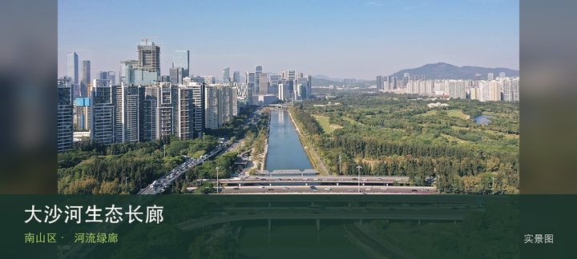
授权实景图大沙河生态长廊位于西丽至深圳湾沿河，河流从大学城、高科技园穿过密集城区抵达海湾，不同区段呈现生态修复、桥梁和社区使用的变…
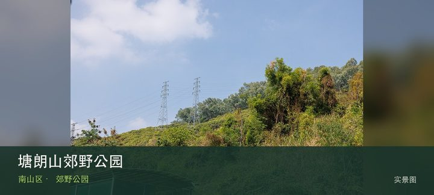
授权实景图塘朗山郊野公园位于桃源龙珠片区，最高点塘朗顶与盘山道路、山林支路组成靠近城区的郊野系统，短距离也有持续爬升和湿滑风险。现…
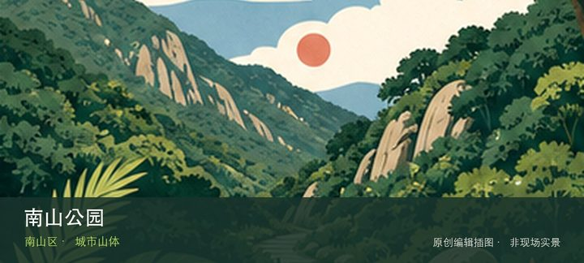
编辑配图·非现场实景南山公园位于蛇口半岛，密集台阶把蛇口港、前海和深圳湾视野逐层展开，城市山体不高但上下坡累计对膝盖并不轻松。现场的空间线索…
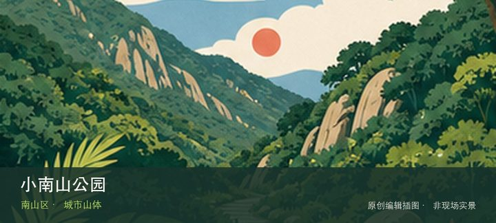
编辑配图·非现场实景小南山公园位于赤湾港区北侧，较小众的山体从赤湾社区抬升，可观察港口、珠江口和大南山关系，坡度与工业交通界面需要留意。先辨…
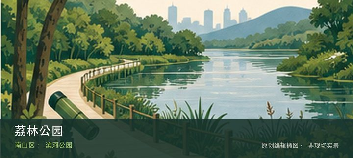
编辑配图·非现场实景荔林公园位于南头大沙河入海口，滨河草地、桥下空间和入海口水岸形成低强度慢行点，更适合观察河海交汇与附近社区而非追求大型设…
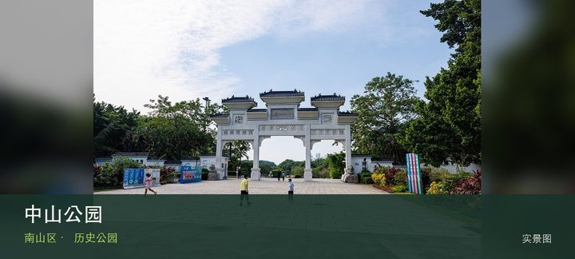
授权实景图中山公园位于南头古城北侧，古城墙遗迹、孙中山纪念元素和成熟老树叠在一座老公园中，是连接南头古城历史与居民日常的缓冲地带。…
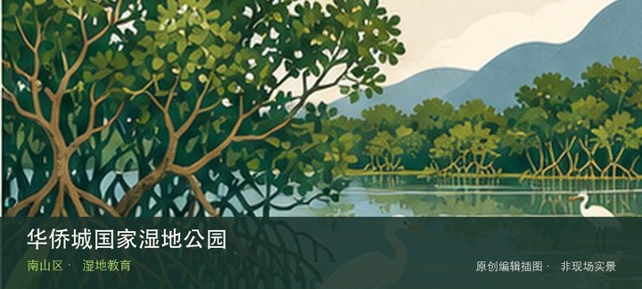
编辑配图·非现场实景华侨城国家湿地公园位于华侨城，预约制管理保护城市中心少见的滨海湿地生境，核心体验是导览中的鸟类、红树林和水位观察而非自由…
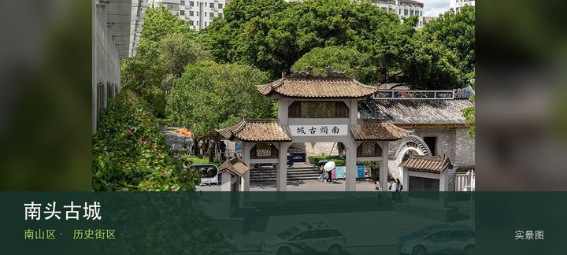
授权实景图南头古城位于南头街道，城门、街巷、祠堂、展馆与改造后的创意商业共同存在，真正的看点是古城格局如何继续容纳当代社区。从南城…
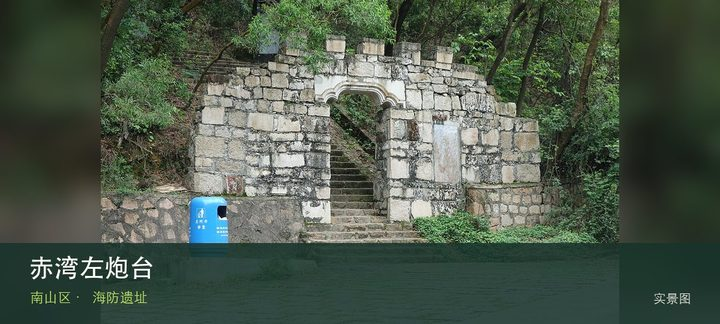
授权实景图赤湾左炮台位于赤湾鹰嘴山，小型清代海防遗址借山势面向珠江口，炮台、城垣残迹与港口视野能补足蛇口海洋史的军事一面。把注意力…
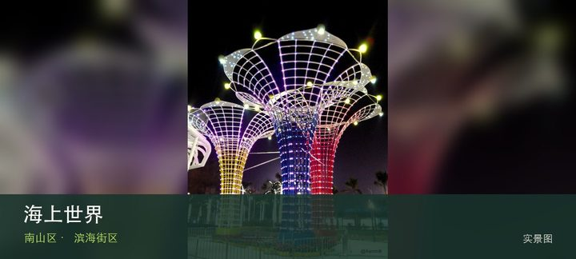
授权实景图海上世界位于蛇口，明华轮、滨海广场、公共艺术和餐饮街区展示蛇口港区更新，夜间氛围浓但历史线索容易被商业景观遮住。若只匆匆…
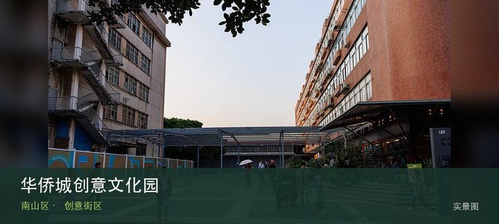
授权实景图华侨城创意文化园位于华侨城旧工业区，旧厂房改造出的设计机构、画廊、书店和活动空间分散在南北区，体验随展览与店铺更替而变化…
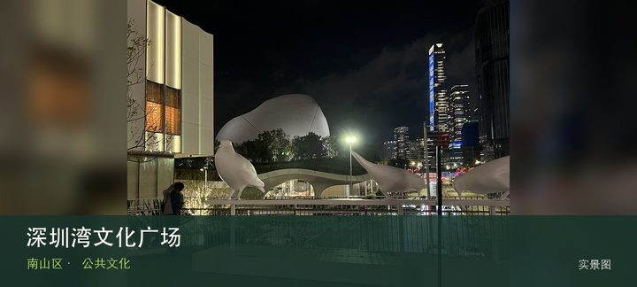
授权实景图深圳湾文化广场位于后海文化地标群，新公共文化建筑、开放广场与深圳湾天际线形成大型城市客厅，实际可进入场馆与展览依开放进度…
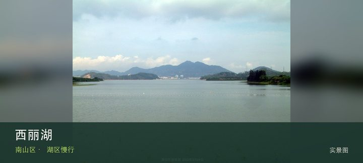
授权实景图西丽湖位于西丽大学城与山地交界，湖区、校园和麒麟山等山体构成较安静的城郊景观，但公开道路、校园门禁和水库管理边界必须区分…
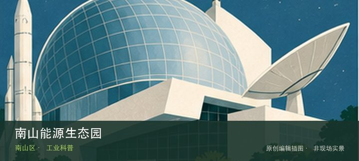
编辑配图·非现场实景南山能源生态园位于妈湾，以垃圾焚烧、烟气处理和城市能源循环为主题的工业参访点，真实生产系统比普通科普模型更有价值。这里不…
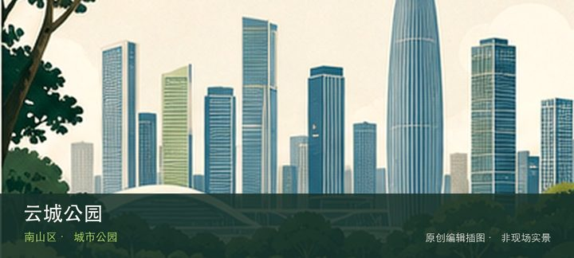
编辑配图·非现场实景云城公园位于留仙洞总部基地，架空平台、山体连桥和高密度总部建筑组成多层公共空间，适合观察新城如何处理坡地与步行连接。先辨…
深圳市南山博物馆位于南山大道，常设展从南山地域历史延伸至近现代海洋、移民与城区发展，大型临展又提供跨地域文物观看机会。这…
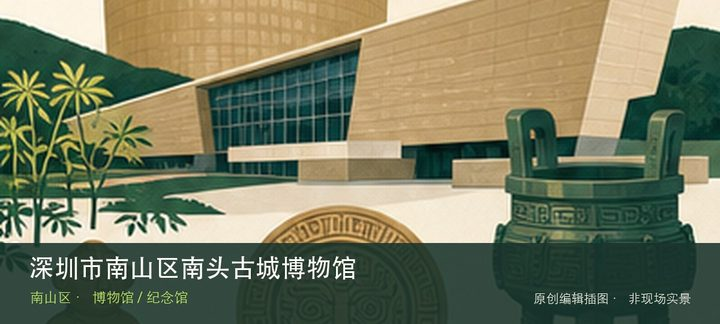
编辑配图·非现场实景深圳市南山区南头古城博物馆位于南头古城较场路，馆舍把古城建置、海防治理与出土文物集中起来，是进入商业与社区混合街区前建立…
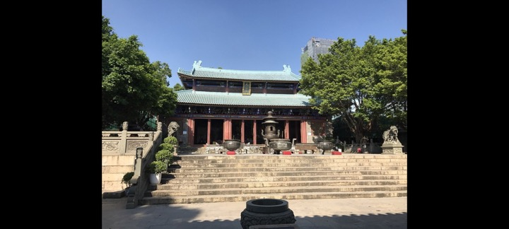
编辑配图·非现场实景深圳市南山区天后博物馆位于赤湾，依托赤湾天后宫讲述海神信仰、海上交通和民间礼俗，初一十五等特殊日历会直接改变开放与现场秩…
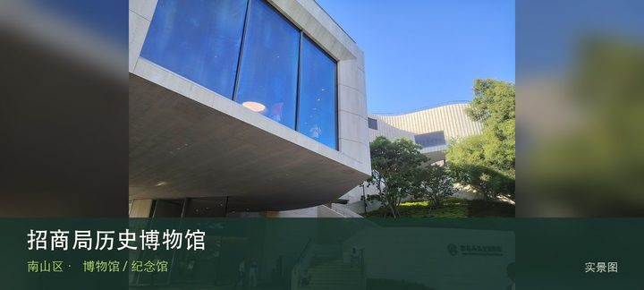
授权实景图招商局历史博物馆位于蛇口沿山路，以招商局企业史串联近代航运、港口建设和蛇口工业区开发，能把一家公司放进中国现代化进程观察…
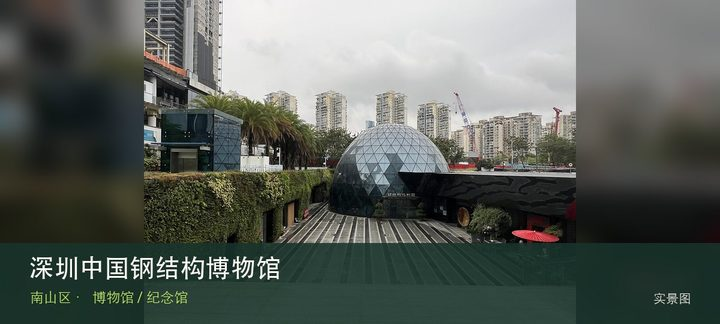
授权实景图深圳中国钢结构博物馆位于后海中心路，以钢结构材料、连接方式和大型工程案例为主，建筑本身也适合观察结构如何成为可读的展品。…
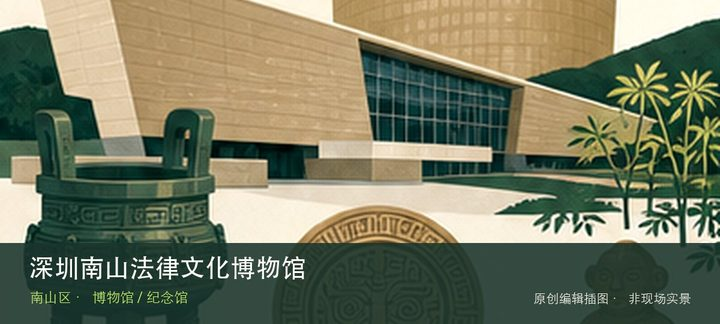
编辑配图·非现场实景深圳南山法律文化博物馆位于玉泉路，通过法律文献、制度沿革和普法展陈呈现法治文化，专题性强但名录在列不等于每天稳定接待散客…
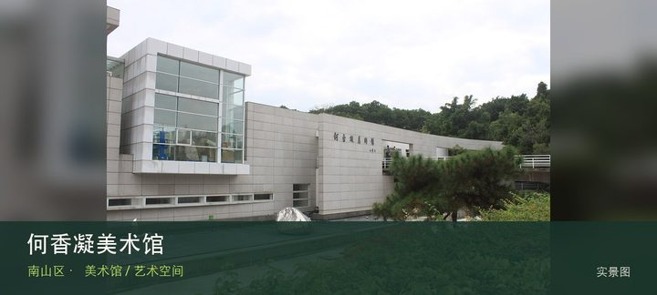
授权实景图何香凝美术馆位于华侨城，以何香凝艺术、二十世纪中国美术研究和当代专题展构成稳定学术方向，馆舍与华侨城文化设施可顺路组合。…
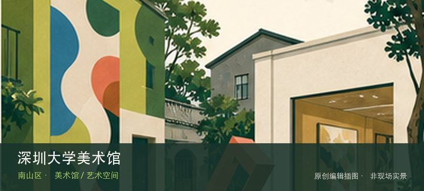
编辑配图·非现场实景深圳大学美术馆位于深圳大学艺术村，高校美术馆把师生创作、学术研究和实验展览放在校园语境中，门禁和教学日历会影响实际可达性…
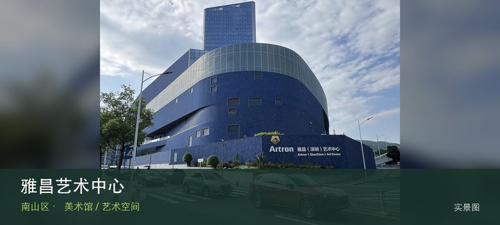
授权实景图雅昌艺术中心位于深云路雅昌大厦，从艺术印刷、图像数据库到展览空间呈现艺术出版产业链，适合关注作品如何被复制、整理和传播。…
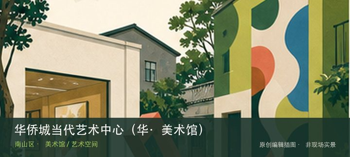
编辑配图·非现场实景华侨城当代艺术中心（华·美术馆）位于华侨城创意文化园北区，旧工业建筑中的当代艺术机构长期关注城市、设计和跨媒介实践，展期…
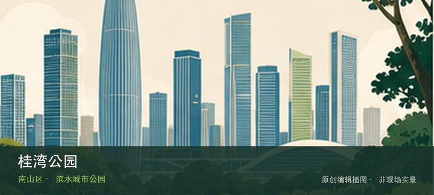
编辑配图·非现场实景桂湾公园位于前海桂湾河南街与鲤鱼门西二街交会处，约45公顷的前海滨水公园通过水廊、草坡和城市天际线呈现新城区公共空间。现…
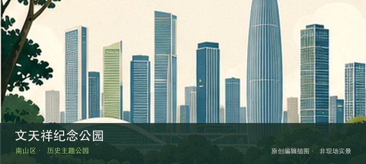
编辑配图·非现场实景文天祥纪念公园位于兴海大道与赤湾六路交会处，近48公顷山体公园以文天祥文化纪念和赤湾港区视野构成历史与地形并重的路线。从…
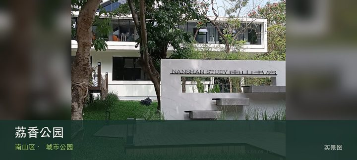
授权实景图荔香公园位于深南大道与南海大道交会处，老牌城市公园以荔枝林、草坪和邻近文化设施构成南头片区的日常绿心。把注意力放在成片荔…
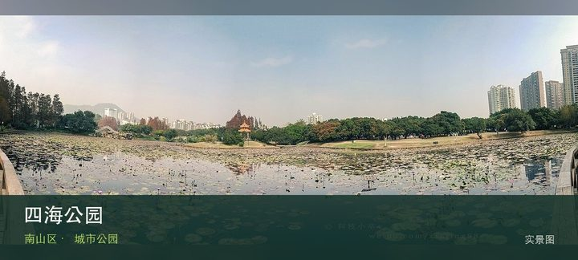
授权实景图四海公园位于蛇口公园路82-2号，蛇口老社区中的湖景公园保留岭南园林、水岸步道和居民日常活动氛围。若只匆匆经过容易错过重…
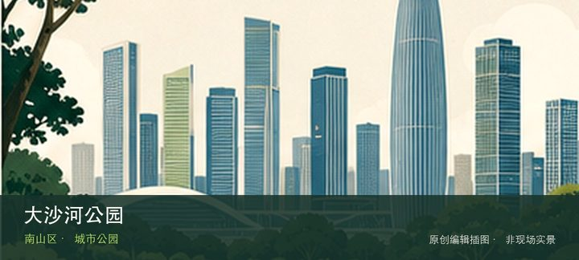
编辑配图·非现场实景大沙河公园位于桃源街道北环大道8228号，塘朗山脚下的城市公园以起伏地形、中央绿茵坪、花镜与运动场地连接大沙河生态长廊，…
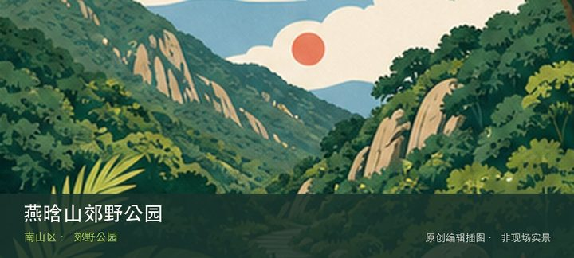
编辑配图·非现场实景燕晗山郊野公园位于华侨城侨城东街6号，华侨城中心片区的24.5公顷山林保留相思树、荔枝林、小桥流水与自然坡地，五条不同风…
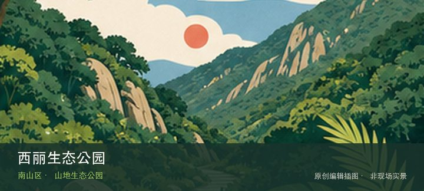
编辑配图·非现场实景西丽生态公园位于同东路与打石一路交会处东南角，23.5万平方米的山地生态公园保留荔枝林和少量农耕空间，并以阳光草坪、儿童…
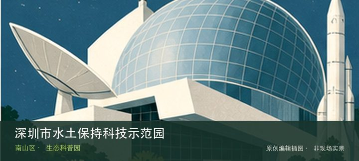
编辑配图·非现场实景深圳市水土保持科技示范园位于西丽街道沙河西路4148号，由废弃采石场修复而来的公益性科普园，以水土文化、水土流失模拟、植…
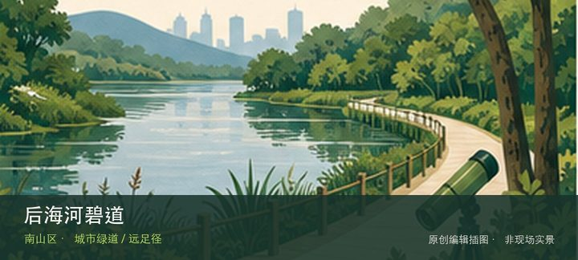
编辑配图·非现场实景后海河碧道位于后海片区中心路，东滨路至东角头海湾，已建成约2公里的城市滨河碧道连接深圳湾滨海休闲带，以亲水空间、慢行道路…
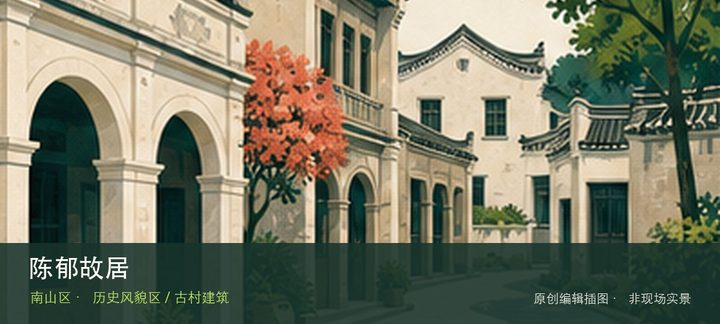
编辑配图·非现场实景陈郁故居位于南园街道南园社区，故居以小尺度住宅和人物陈列承载深圳本地近现代工业史与社区记忆。若只匆匆经过容易错过重点，故…
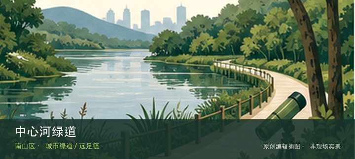
编辑配图·非现场实景中心河绿道位于东滨路至深圳湾出海口，单侧约2.2公里的儿童友好滨水线路于2023年全段开放，把沙滩、河口与社区公园串联。…
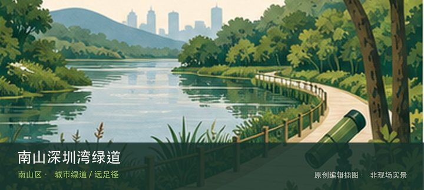
编辑配图·非现场实景南山深圳湾绿道位于红树林保护区至深圳湾大桥西侧，约13公里滨海慢行线沿深圳湾展开，可分段步行或骑行并观察潮间带与城市海岸…
世界之窗以世界各地代表性景观、主题演艺和节庆活动组成一座大型城市主题景区，是华侨城旅游度假区中适合整日安排的入口。初次到…
锦绣中华民俗文化村把中国名胜缩景、民族文化村落和现场演艺放进华侨城的一条主题游线，适合用半天到一天建立对不同地域景观与民…
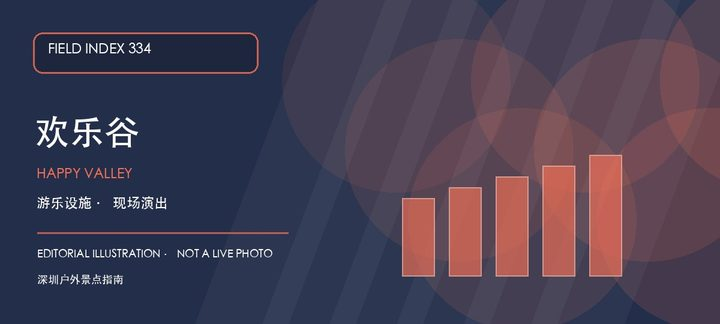
编辑配图·非现场实景欢乐谷是华侨城片区以游乐设施、主题分区、现场演出和季节活动为主的城市主题乐园，适合把一整天交给少数重点项目，而不是在入口…
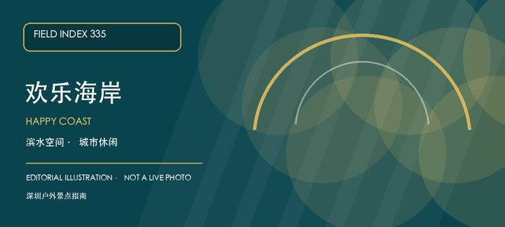
编辑配图·非现场实景欢乐海岸把滨水空间、商业休闲、餐饮和文化活动组织成一处城市度假型景区，适合在深圳湾片区安排一段低强度的傍晚散步，也适合把…
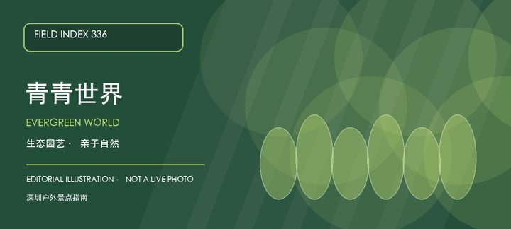
编辑配图·非现场实景青青世界以城市近郊生态、园艺展示和亲子体验为主要内容，把短途自然教育与休闲游线放在南山片区内完成。初访可以把植物、田园和…
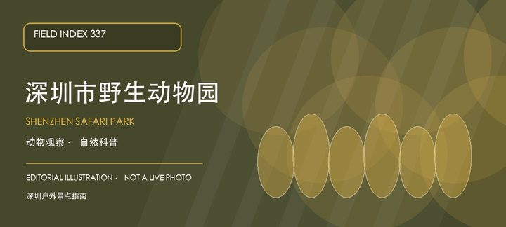
编辑配图·非现场实景深圳市野生动物园是西丽湖片区的大型动物主题景区，适合把动物观察、科普教育和户外步行组合成一日行程。园区尺度较大，动物状态…